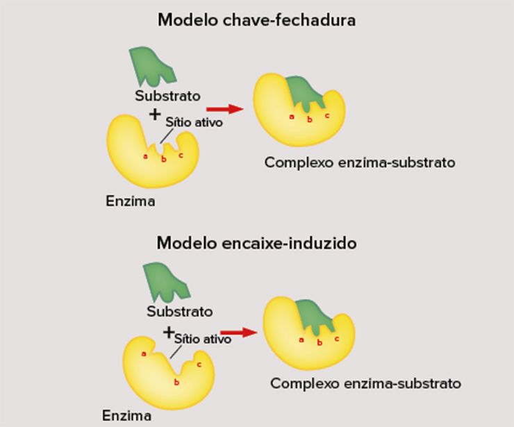

Os organismos vegetais têm a capacidade de sintetizar todos os 20 aminoácidos necessários para a construção de suas proteínas. Nos animais, inclusive nos seres humanos, alguns aminoácidos são sintetizados pelas próprias células, enquanto outros, ou são sintetizados em quantidades insuficientes ou não são produzidos e, portanto, devem ser adquiridos prontos por meio da alimentação. Assim, considerando a forma de obtenção dos aminoácidos, é possível classificá-los respectivamente como naturais e essenciais
Os aminoácidos essenciais podem ser obtidos, dentre outros alimentos, por meio da ingestão de carnes vermelhas, frango, peixes, ovos, queijos, proteínas da soja, feijão, lentilha, amêndoas, amendoim, castanha-do-pará, aveia, granola e arroz. Vale destacar que são poucos os alimentos que contêm todos os aminoácidos essenciais e que, por esse motivo, uma dieta variada é de extrema importância para a manutenção e o funcionamento do organismo.
Proteínas – Os 8 Mitos da Proteína Vegetal. Alimentação Sem Carne Dr. Eric Slywitch.Você já deve ter ouvido falar sobre dietas baseadas quase exclusivamente no consumo de alimentos de origem vegetal e, junto delas, uma enxurrada de informações favoráveis e contrárias a esse estilo de vida. Mas o que é realmente comprovado sobre essa forma de alimentação? Para conhecer mais sobre o assunto e desmitificar alguns pontos, assista ao vídeo produzido pela Sociedade Vegetariana Brasileira (SVB).Disponível em: http://p.p4ed.com/ZGXHV.
União entre aminoácidos
A ligação entre aminoácidos ocorre entre a terminação amina de um e a terminação carboxila de outro. Essa ligação é chamada de A ligação entre aminoácidos ocorre entre a terminação amina de um e a terminação carboxila de outro. Essa ligação é chamada de. Por resultar na liberação de uma molécula de água, assim como para a formação dos carboidratos, trata-se de uma reação de síntese por desidratação.
Quando dois aminoácidos se unem por meio de uma ligação peptídica, conforme mostra a figura anterior, o produto formado é denominado peptídeo ou dipeptídeo. O termo proteína é comumente empregado para designar macromoléculas resultantes da união de vários aminoácidos, também chamadas de cadeias polipeptídicas ou polipeptídeos.
As proteínas podem ser constituídas por uma única cadeia polipeptídica, como é o caso da queratina, ou ainda serem formadas por mais de uma cadeia polipeptídica – por exemplo, a hemoglobina, a qual apresenta quatro cadeias polipeptídicas em sua conformação.
Estrutura das proteínas
Em geral, as proteínas assumem formas tridimensionais. A sequência de aminoácidos é fundamental para a determinação desse arranjo e, consequentemente, para todas as demais propriedades das proteínas. Assim, como veremos a seguir, as proteínas podem assumir quatro conformações estruturais.
Representação dos 20 tipos de aminoácidos.
Esquema da formação de um dipeptídeo. Note a união entre dois aminoácidos por uma ligação peptídica.
Estrutura primária
A estrutura primária de uma proteína corresponde à sequência linear de aminoácidos, que por sua vez se unem por meio das ligações peptídicas. Essas sequências são definidas com precisão, uma vez que a estrutura é essencial na determinação da função que a proteína desempenhará. Tal precisão fica a cargo das informações contidas no material genético dos organismos. Alterações nesse material, conhecidas por mutações gênicas, podem prejudicar ou impedir que as proteínas exerçam seu papel biológico, resultando, assim, em anomalias, síndromes ou até mesmo no óbito precoce do indivíduo.
Estrutura secundária
Por consequência das características apresentadas pelas cadeias laterais de cada aminoácido e também pelos átomos que não participam das ligações peptídicas, a cadeia polipeptídica tende a se dobrar e enovelar. As conformações assumidas pelos polipeptídeos são decorrentes de um padrão regular de ligações de hidrogênio que ocorrem entre os grupamentos N–H e C=O, podendo ser de dois tipos principais: a alfa-hélice ou a folha beta-pregueada.
Estrutura terciária
A estrutura terciária representa o arranjo tridimensional que uma proteína pode apresentar. Essa conformação é resultado das inúmeras interações de atração e repulsão que ocorrem entre as diferentes regiões dos aminoácidos, como por exemplo, as ligações covalentes entre os átomos de enxofre chamadas de dissulfeto.
Estrutura quaternária
Enquanto as estruturas terciárias são representadas por cadeias polipeptídicas únicas, a estrutura quaternária é resultante da união entre dois ou mais polipeptídeos. A hemoglobina é um exemplo de proteína que apresenta esse tipo de estrutura, sendo constituída, mais especificamente, por quatro cadeias polipeptídicas.
Estrutura quaternária
As alterações estruturais que ocorrem nas moléculas de proteínas não necessariamente se restringem às mutações gênicas citadas anteriormente. Outros fatores, como aumento de temperatura, variações de pH e altas concentrações de substâncias polares e apolares, podem resultar em modificações na sua forma e afetar, consequentemente, sua função. Esse processo é conhecido como desnaturação, fenômeno que, em alguns casos, é reversível (renaturação), mas que, na maioria das vezes, não.
Para compreendermos melhor esse conceito, vamos pensar em um exemplo prático do dia a dia: certamente, em algum momento da sua vida, você já deve ter visto um ovo cru e um ovo cozido. Envolvendo toda a gema existe a clara, uma substância cuja composição consiste na proteína albumina e que, nas duas situações anteriores, assumem diferentes consistências. No ovo cru, a clara é translúcida e mole; já no ovo cozido, a mesma clara passa a apresentar coloração branca e consistência endurecida. Essa diferença ocorre por causa da elevação da temperatura durante oprocesso de cozimento, que resulta no rompimento das ligações que mantinham a estrutura terciária da albumina e levam a sua desnaturação. Uma vez que o ovo foi cozido, é impossível retornar à consistência inicial da clara, caracterizando-se como um exemplo de desnaturação irreversível.
Funções proteicas
Retomando o conceito de proteínas, sabemos que elas são formadas basicamente por aminoácidos que se unem por ligações peptídicas e são consideradas as macromoléculas mais versáteis presentes nos sistemas vivos, sendo responsáveis por desempenhar atividades fundamentais. Para melhor compreensão desse tópico, tenha em mente que, para exercer suas variadas funções, cada proteína precisa se juntar a ligantes específicos.
Reserva energética
Assim como as macromoléculas estudadas no capítulo anterior, as proteínas também podem ser aproveitadas como fonte de energia para a manutenção das funções celulares. Por meio do metabolismo dos aminoácidos, são geradas moléculas capazes de participar do processo metabólico que produz energia para o funcionamento das células. Entretanto, o consumo dessas moléculas para esse fim acontece somente na ausência de outros substratos energéticos, como carboidratos e lipídeos.
Estrutural
A principal função exercida pelas proteínas é a de componente estrutural fundamental de inúmeras partes do corpo dos seres vivos, inclusive das células. As proteínas estão presentes, entre outros exemplos, nos músculos (actina e miosina), atuando na contração muscu-lar; em cartilagens, ossos, tendões e pele (colágeno), conferindo rigidez e forma a esses órgãos; e em tecidos, compondo anexos do tecido epidérmico (queratina), co-mo unhas e cabelos. Nas células, além de compor a estrutura da membrana plasmática, as proteínas também podem atuar como receptores capazes de receber e reconhecer sinais intracelulares e extracelulares ou, ainda, agir como moléculas transportadoras de substâncias.
Estrutural
Algumas proteínas têm a capacidade de carregar substâncias para as diferentes partes do corpo dos seres vivos. A hemoglobina, por exemplo, é responsável por transportar oxigênio para os tecidos. As proteínas transportadoras presentes na membrana plasmática, também chamadas de carreadoras, possibilitam a passagem seletiva de íons, pequenas moléculas e macromoléculas de dentro para fora das células, e vice-versa.
Defesa
As células do sistema imunitário produzem proteínas em resposta à presença de microrganismos invasores ou moléculas estranhas ao organismo, os quais são genericamente chamados de antígenos. Essas proteínas são os anticorpos, ou imunoglobulinas, e apresentam alta especificidade em relação aos antígenos, reconhecendo-os e ligando-se a eles de modo a inativá-los ou marcá-los para serem destruídos.
Regulação
Hormônios são substâncias químicas lançadas na corrente sanguínea, responsáveis por controlar atividades metabólicas no organismo, já que interagem de maneira específica com as células-alvo. Entre eles, o grupo mais numeroso é quimicamente composto de proteínas de diferentes pesos moleculares, produzidas em várias regiões do corpo, como é o caso da insulina e do glucagon, produzidos no pâncreas e responsáveis pela manutenção da glicemia do indivíduo.
Catálise
Catalisadores são substâncias capazes de alterar a velocidade de ocorrência de uma reação química, diminuindo sua energia de ativação necessária, isto é, a energia mínima para que ela aconteça.
Em sistemas não vivos, uma das maneiras de mudar a dinâmica de uma reação é fornecer a energia mínima necessária para que ela ocorra, por exemplo, aumentando a temperatura. Isso garante que as moléculas dos reagentes se movimentam mais rapidamente, elevando as chances de se chocarem. Entretanto, nos seres vivos, isso não ocorre, pois é importante que não haja aumentos significativos na temperatura, uma vez que, como vimos anteriormente, altas temperaturas ocasionam a desnaturação de proteínas.
Além do mais, nos organismos vivos, as inúmeras reações químicas ocorrem de maneira diferenciada em nível celular e extracelular. As reações extracelulares são geralmente muito lentas e pouco espontâneas.
Para garantir a ocorrência dessas reações, proteínas especializadas, chamadas enzimas, possibilitam a ocorrência de várias reações sem serem consumidas. Além do mais, as reações catalisadas por enzimas são conectadas em série, ou seja, o produto de uma reação se torna o reagente da seguinte. Podemos citar, dentre outros exemplos de enzimas, aquelas encontradas no sistema digestório, como a amilase salivar (ou ptialina), as proteases e as lipases.
A fim de se conhecer ainda mais sobre as enzimas, a seguir, abordaremos as definições e as funções desse grupo específico de proteínas.
Enzimas
Nos sistemas biológicos, as enzimas determinam padrões nas transformações químicas. E, apesar de estarmos tratando delas como proteínas, outras macromoléculas parecem apresentar poder catalítico, igualmente eficiente às enzimas proteicas, como é o caso dos chamados RNAs catalíticos, ou ribozimas.
No que diz respeito às enzimas proteicas, duas importantes características devem ser destacadas: o grande poder catalítico e a alta especificidade que apresentam.
Quanto ao poder catalítico, ao tratar das funções das proteínas, estudamos que algumas conseguem acelerar a velocidade das reações diminuindo a energia de ativação necessária para a sua ocorrência. No gráfico a seguir, podemos ver a diferença de energia de ativação entre uma reação com a participação (ou não) de uma enzima.
Energia de ativação necessária para ocorrência de uma reação na presença e na ausência de enzimas.
Imagine o seguinte: para construir um caminho em regiões montanhosas, muitas vezes nos valemos de túneis para alcançar rapidamente o destino. Do contrário, teríamos que subir e descer as várias montanhas pelo caminho, tornando a viagem ainda mais longa. As enzimas agem de forma semelhante: são como os túneis que encurtam o caminho a ser percorrido.
Ao dizer que uma enzima é altamente específica, deve-se considerar tanto as reações a serem catalisadas quanto os reagentes aos quais ela se ligará. A partir de agora, quando nos referirmos aos reagentes de uma reação utilizaremos o termo “substrato”. Tal especificidade ocorre por causa da estrutura tridimensional apresentada por ambas as moléculas.
Ao dizer que uma enzima é altamente específica, deve-se considerar tanto as reações a serem catalisadas quanto os reagentes aos quais ela se ligará. A partir de agora, quando nos referirmos aos reagentes de uma reação utilizaremos o termo “substrato”. Tal especificidade ocorre por causa da estrutura tridimensional apresentada por ambas as moléculas.
O reconhecimento e a ligação do substrato à enzima formam a primeira etapa do processo catalítico e ocorrem em uma região específica da enzima denominada sítio ativo, resultando na formação de um estado de transição conhecido como complexo enzima-substrato.
Acreditava-se, em um primeiro momento, que enzimas e substratos fossem complementares uns aos outros, resultando em um encaixe perfeito, como entre a chave e a fechadura. Entretanto, atualmente, a especificidade é explicada pelo modelo de “encaixe induzido”, no qual parte do substrato se liga à enzima na região do sítio ativo correspondente, alterando a conformação dessa subunidade e permitindo, assim, a associação completa entre substrato e enzima.

Modelos de interação entre enzima e substrato.
Ao final da catálise enzimática, as enzimas poderão ser reutilizadas, caso ainda haja substrato. Os produtos originados poderão ter sido derivados da quebra ou da junção entre substratos. Observe as etapas na figura a seguir.

Representação das etapas da catálise enzimática.
VectorMine/Shutterstock.com
Classificação das enzimas
Enzimas podem ser classificadas em simples ou conjugadas. No caso destas, para que a atividade catalítica seja realizada, é necessário que pequenas moléculas estejam ligadas ao sítio ativo da enzima. Essas moléculas são conhecidas como cofatores e podem estar unidas à enzima de maneira transitória ou permanente, constituindo o grupo prostético. Os cofatores podem ser de dois tipos: inorgânicos (normalmente íons metálicos), ou orgânicos, que são denominados coenzimas e derivados de moléculas de vitaminas.
Atividade enzimática
As enzimas geralmente recebem o nome do substrato sobre o qual agem mais o sufixo “-ase”. Se retornarmos aos exemplos dados temos a amilase salivar, cujo substrato é o amido; as proteases, grupo de enzimas que agem sobre proteínas; e a lipase, a qual atua sobre moléculas de lipídeos.
Algumas condições podem afetar diretamente a atividade enzimática, entre elas a concentração de substrato, a temperatura e o pH do meio no qual a reação irá ocorrer.
Enzima e substrato interagem por meio do sítio de ligação. Dessa forma, enquanto há sítios livres, com elevação e concentração de substrato, a velocidade da reação será aumentada. Isso ocorrerá até a saturação das enzimas, isto é, até que haja substrato suficiente para que o sítio ativo de todas as enzimas esteja ocupado, não alterando mais a velocidade da reação.
A maioria das enzimas apresenta valores de pH e temperatura ideais, nos quais a velocidade da reação é elevada, garantindo sua máxima atividade. Eles variam de organismo para organismo.
Em vias metabólicas, é comum que os produtos das reações atuem como inibidores das enzimas que participam das reações iniciais, configurando, assim, o mecanismo conhecido como retroinibição (feedback).
Representação dos tipos de inibidores enzimáticos. Inibidores competitivos apresentam estrutura compatível com o sítio ativo, dificultando a ligação com o substrato. Já os inibidores não competitivos se associam a outra região da enzima que não o sítio ativo, porém alteram a sua conformação, impedindo que o substrato se una à enzima.
Fuvest-SP Uma substância X é o produto final de uma via metabólica controlada pelo mecanismo de retroinibição (feedback) em que, acima de uma concentração, X passa a inibir a enzima 1.
Podemos afirmar que, nessa via metabólica,a) b) c) d) e)
- a quantidade disponível de X tende a se manter constante.
- o substrato faltará se o consumo de X for pequeno.
- o substrato se acumulará quando a concentração de X diminuir.
- a substância A se acumulará quando a concentração de X aumentar.
- a substância B se acumulará quando o consumo de X for pequeno.
Resposta
Resolução:Alternativa: A As enzimas normalmente atuam em série em uma via metabólica, isto é, o produto de uma reação serve como reagente da seguinte. Dessa forma, elas conseguem ter controle do funcionamento das reações em um organismo.Na situação exposta, apenas a afirmativa A está correta, visto que o excesso de X inibe a enzima 1, gerando acúmulo de substrato e, consequentemente, impedindo o funcionamento das demais enzimas participantes da via metabólica. Na falta de X, mais substrato será consumido, a fim de repor a quantidade da substância em questão, mantendo todas as enzimas ativas, ou seja, catalisando as reações de modificação do substrato e das substâncias A e B até X ser gerado.

Aplicando conhecimentos
1
A afirmação “toda enzima é uma proteína, mas nem toda proteína é uma enzima” está correta? Justifique sua resposta.
2
Fuvest-SP 2016 No esquema abaixo, está representada uma via metabólica; o produto de cada reação química, catalisada por uma enzima específica, é o substrato para a reação seguinte.
Num indivíduo que possua alelos mutantes que levem à perda de função do gene:
- A, ocorrem falta do substrato 1 e acúmulo do substrato 2.
- C, não há síntese dos substratos 2 e 3.
- A, não há síntese do produto final.
- A, o fornecimento do substrato 2 não pode restabelecer a síntese do produto final.
- B, o fornecimento do substrato 2 pode restabelecer a síntese do produto final.
3
Indique três funções biológicas que as proteínas podem apresentar.
Consolidando saberes
1
FMP-RJ 2016
O modo de ação das enzimas e a análise do gráfico permitem concluir que
- todas as moléculas de enzimas estão unidas às moléculas de substrato quando a reação catalisada atinge a taxa máxima.
- com uma mesma concentração de substrato, a taxa de reação com enzima é menor que a taxa de reação sem enzima.
- a reação sem enzima possui energia de ativação menor do que a reação com enzima.
- o aumento da taxa de reação com enzima é inversamente proporcional ao aumento da concentração do substrato.
- a concentração do substrato não interfere na taxa de reação com enzimas porque estas são inespecíficas.
2
UFRGS 2018
Assinale com V (verdadeiro) ou F (falso) as afirmações abaixo, referentes às enzimas.
- As enzimas têm todas o mesmo pH ótimo.
- A temperatura não afeta a formação do complexo enzima-substrato.
- A desnaturação, em temperaturas elevadas, acima da ótima, pode reduzir a atividade enzimática.
- A concentração do substrato afeta a taxa de reação de uma enzima.
A sequência correta de preenchimento dos parênteses, de cima para baixo, é
- V – V – F – F.
- V – F – V – F.
- V – F – F – V.
- F – V – F – V.
- F – F – V – V.
3
UPF-RS 2014
- proteína, carboidratos, lipídio, ácido nucleico.
- carboidrato, lipídios, ácido nucleico, proteína.
- carboidrato, proteínas, ácido nucleico, lipídio.
- lipídio, carboidratos, proteína, ácido nucleico.
- proteína, carboidratos, ácido nucleico, lipídio.
4
Unesp 2018 Ea
Se essa reação bioquímica ocorrer com a célula mantida a 36 °C, a energia de ativação (Ea) indicada no gráfico 1 e a velocidade da reação serão, respectivamente,
- a mesma e a mesma.
- maior e menor.
- menor e menor.
- menor e maior.
- maior e maior.
5
Uece 2017
- tiveram sua estrutura primária rompida irreversivelmente.
- apesar de modificadas, permaneceram com sua estrutura primária, composta pela sequência de aminoácidos ligados entre si.
- foram temporariamente modificadas, podendo assumir sua conformação espacial original em condições ideais de temperatura.
- se tornaram inadequadas para o consumo humano, já que foram estruturalmente alteradas.
6
Uece 2015
- os monômeros dos ácidos nucleicos.
- os monômeros construtores de proteínas.
- moléculas básicas para a atividade da maioria das enzimas.
- coenzimas de importante relevância no processo de síntese proteica.
7
Udesc 2017
I.
II.
III.
IV.
Analisadas as proposições, assinale a alternativa correta.
- Somente as afirmativas II, III e IV são verdadeiras.
- Somente as afirmativas II e III são verdadeiras.
- Somente as afirmativas I, II e IV são verdadeiras.
- Somente as afirmativas III e IV são verdadeiras.
- Somente as afirmativas I, II e III são verdadeiras.
8
PUC-Campinas 2017
- glicosídicas.
- peptídicas.
- fenólicas.
- aromáticas.
- lipídicas.
9
UFJF/Pism-MG 2018
correto
- aumenta a atividade das proteínas.
- desnatura as proteínas, inibindo a sua atividade.
- provoca o acúmulo de proteínas no retículo endoplasmático.
- induz a quebra das proteínas e, consequentemente, a sua inativação.
- modifica a sequência de aminoácidos das proteínas e, consequentemente, o seu funcionamento.
10
UPF-RS 2016
- Cada indivíduo produz as suas próprias proteínas, que são codificadas de acordo com o seu material genético.
- As proteínas são constituintes, juntamente com os lipídios, das biomembranas celulares. Na membrana plasmática, desempenham papéis importantes na permeabilidade.
- Proteínas especiais ligam-se ao DNA de seres eucariotos para formar a cromatina.
- São todas constituídas por sequências monoméricas de aminoácidos e monossacarídeos.
- Diferem umas das outras pelo número, pelo tipo e ela sequência de aminoácidos que as constituem.
11
Unicamp-SP 2016
a) Alterações no pH intracelular afetam a estrutura de proteínas. Por que isso ocorre?
12
Unicamp-SP 2020
a) A combinação de arroz e feijão fornece todos os aminoácidos essenciais ao organismo. A tabela abaixo apresenta variações na quantidade de alguns aminoácidos essenciais por categorias de alimentos.
b)
(Adaptado de Marchini e outros, Aminoácidos. São Paulo: ILSI Brasil-International Life Sciences Institute do Brasil, 2016, p. 18.)
Considere uma época de escassez em que é necessário substituir o feijão do combinado “arroz e feijão” por outro alimento. Tendo como base as informações fornecidas, que alimento da tabela poderia ser escolhido? Justifique sua resposta.
Superação
OBB 2014 Observe a figura abaixo:
Ela indica um processo de:
- feedback positivo.
- inibição competitiva.
- catálise química.
- reação de análise.
- inibição alostérica.